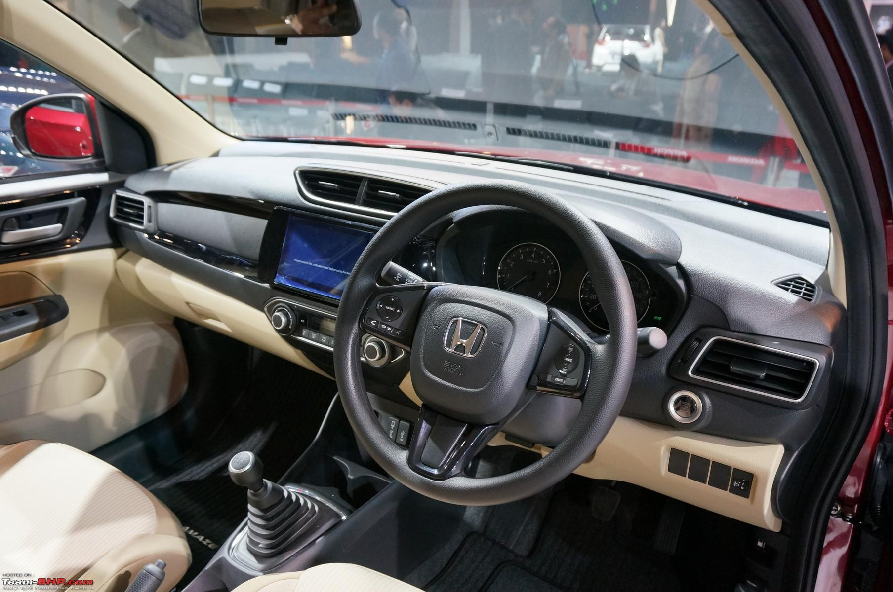
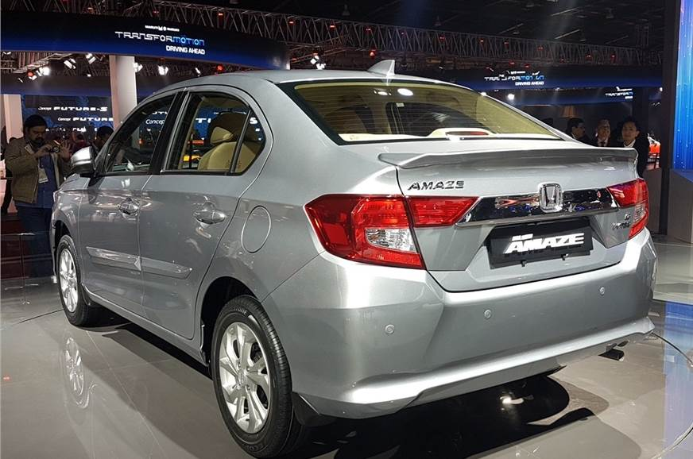
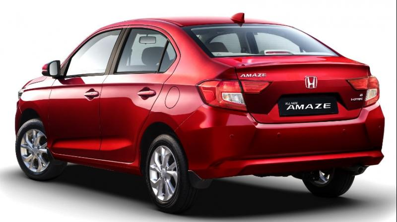
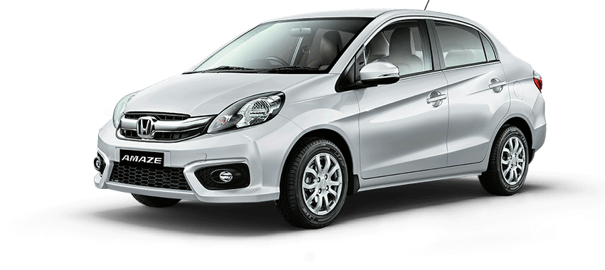

Honda Amaze
Innovative technologies, progressive design, and exciting versatile equipment options: The Audi A6 Sedan combines these values into an exceptionally sporty and elegant symbiosis. Elegant and progressive at the same time, this versatility and comfort open up a new kind of mobility.
REVIEW
Introduced in 2013, the Honda Amaze was no different than the other booted hatches in the compact sedan segment. While the Japanese automaker managed well to carve a spacious cabin, the Brio-based design never felt as premium as a sedan should be.
Some minor updates were introduced but failed to provide the car with an upmarket feel. Still, the practicality of the car managed to find over 2.5 lakh buyers in these years but competition in the sub-four-metre segment kept getting fierce.
Finally, Honda decided to go back to the drawing board and sketch the Amaze from the scratch. And the result is an all-new looking car which is completely designed as a sedan.
We got to test the new model recently and here's our drive experience with the 2018 Honda Amaze.
Styling
If understated is a style, the Honda Amaze has it in spades. The handsome sedan has aged, but has mostly avoided looking dated.The exterior hasn’t changed for a few years now, only adding LED headlights and lashings of chrome in a slow, steady march to today’s appearance. It’s handsome and subtle; the most expressive element perhaps is the corporate trapezoidal grille.Inside, the cockpit is busy, but precise. It’s smartly trimmed in a wide number of materials, but subtle hues keep the interior from looking too busy.Compared to the newer Audi A4, the older A6 shows its age. When the A6 is taken alone, it’s perfectly fine.
A low, slim dash hides a pop-up screen and we actually prefer it to the newer Audis fitted with a fixed screen. The permanent fixture in newer models has a bolted-on look that we just can’t get behind.

Performance
The Japanese automobile manufacturer Honda is a renowned manufacturer of petrol engines. Surprisingly, Honda blessed the Amaze with a 1.5-litre i-DTEC diesel engine, which has four cylinders. This engine uses the DOHC (dual overhead cam shaft) technology to operate its sixteen valves, and makes it further effiecient. This powerful engine has been mated with the 5-speed manual transmission gear box for smoother and proficient gear shifts. This mighty engine churns out a maximum power output of 98.6bhp at 3600rpm with a peak torque output of 200Nm at 1750rpm. The engine feels refined, though there is a bit lag initially but you won't feel it much. The engine kicks in with immense force in the mid ranges and it pulls well all till the 3500 rpm redline. The only niggle about this engine is that it is pretty vocal than the competition. The Amaze Diesel has the ability to attain a top speed of around 175 kmph, it can done a 0-100 kmph sprint in just about 12.5 seconds.
The Amaze Petrol uses the same engine that of the Brio hatch, the 1.2-litre i-VTEC engine has the rev free nature of the Honda engines which makes it a fun to drive motor. It generates an amazing power of 86.8BHP at 6000 rpm and a peak torque of 109Nm at 4500 rpm.

Comfort & Quality
The new Amaze isn’t just a Brio with a boot, but a fresh, all-new compact sedan. The second-generation Amaze is built on an all-new platform, which will be a base for future models. It has grown – the Amaze is longer, wider and taller than the outgoing car, while the wheelbase is a significant 65mm longer than before. Overall, the design of the new Amaze is quite striking and nothing like the previous car’s. The buff and vertical nose looks quite unconventional and could split opinion, but what works to make the Amaze look wider than it is, is the thick, signature chrome grille bar and the stretched, flat bonnet. The sides are a lot cleaner and get a single character line which looks neat but not quite as distinctive as the prominent two slashes across the earlier Amaze’s flanks.

Features
ARAI Mileage23.8
kmplCity Mileage22.4 kmpl
Fuel TypeDieselEngine(cc)1498Max
Power78.90bhp@3600rpmMax
Torque160Nm@1750rpmSeating5
Engine Description1.5-litre 78.9bhp 16V i-DTEC Diesel Engine
TransmissionTypeAutomaticCargo
Volume420Liters
